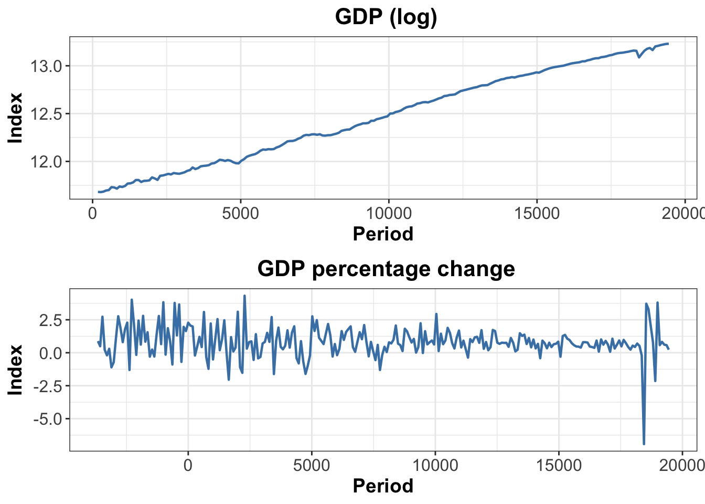
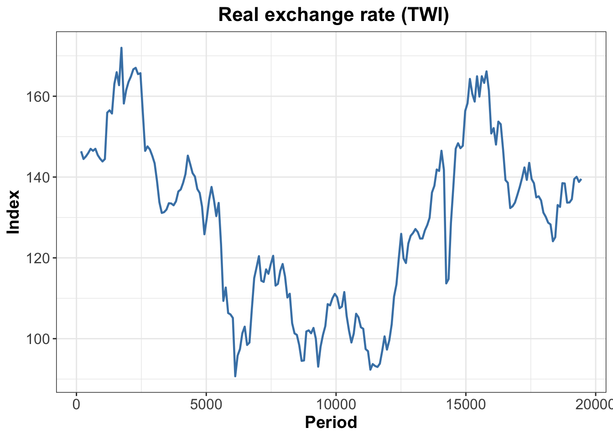
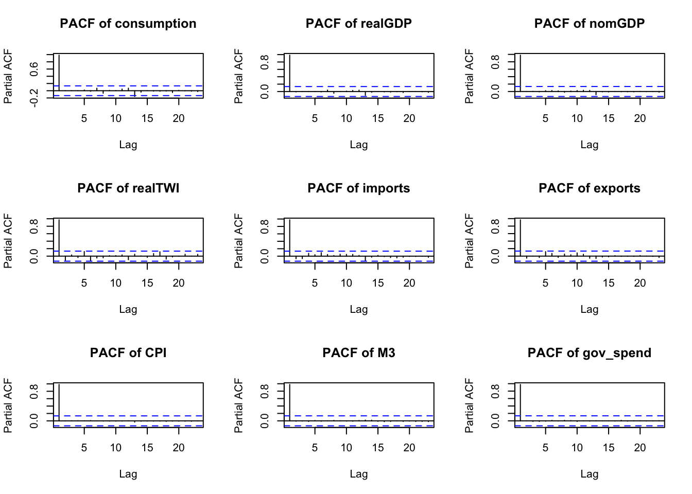

library(readabs)
library(readrba)
library(tseries)
library(ggplot2)
library(cowplot)
library(dplyr)
library(zoo)
library(tidyverse)
library(fredr)
library(urca)
library(xts)
library(GIGrvg)Research Proposal
Abstract. This research project investigates the effects of unanticipated government spending shocks on output, real exchange rate, and consumption, particularly in the context of the Australian economy. Utilizing quarterly data and the SVAR model, the study captures the dynamic relationships among the endogenous variables. The model estimates impulse response functions (IRFs) and forecast error variance decomposition (FEVDs) for each endogenous variable, allowing for the examination of the dynamic responses of variables and quantification of forecast error variances attributable to the shocks.
Keywords. Government spending shock, exchange rate,impulse responses
1. The question objective, and motivation
Objective
The research project aims to model the effect of government spending shocks on output, real exchange rate and consumption
Research question
How does the unanticipated government spending shock influence output, real exchange rate and consumption in the short run and in the long run?
Motivation
Most economies have experienced significant shocks due to Covid Pandemic,resulting in a marked increase in government net debt-to-GDP ratios. For instance,Australian’s general government net debt-to-GDP ratio surged from 24.5% in 2019 to 38.1 in 2021% by (Statistics 2021), while the United States’s ratio rose from 106.1% to 121.1% by (U.S. Office of Management and Budget and Federal Reserve Bank of St. Louis 2023.).
There has been considerable research on the consequences of government spending shocks on output, consumption, and other crucial macroeconomic factors. Economic theory suggests that positive shocks result in increased output and consumption. However, there has been less emphasis on the economy’s external sector, including real exchange rates, imports, and exports. By employing the SVARs model to identify government spending shocks and investigating their connection with these variables, policymakers can enhance the formulation and execution of fiscal and monetary policies in response to unanticipated government spending shocks.
2. Data and their properties
Data
For this study, quarterly data will be utilized for estimation purposes, as it is more reasonable to assume that government spending can respond within a given period. The primary focus of this research will be on the Australian economy, allowing for an in-depth analysis of its reaction to government spending shocks. It is important to note that the findings may not necessarily be applicable to other countries due to their distinct institutional features and economic attributes. Future research could extend the model to other nations in order to gain a broader understanding of cross-country variations in response to government spending shocks.
Initially, I will load the packages that enable direct data downloads from the Reserve Bank of Australia (Australia 2023) and the Federal Reserve Bank of St. Louis (St. Louis Accessed: 5 April 2023).
Variables
Consumption
The dataset contains information on household final consumption expenditure, which is measured in millions of dollars and recorded quarterly, with adjustments for seasonal variations. The plot, however, reveals that the data is non-stationary, with the mean value changing over time. This is a common characteristic of macroeconomic variables. As a result, I also look at the consumption growth data instead, which measures the year-ended household consumption growth and displays a decline in 2020 due to the COVID-19 pandemic. The mean value of consumption growth is 3.41%, indicating that the growth rate fluctuates around this value and is stationary over time.
In the model, the original consumption variable is log-transformed to reduce the scale and conform to the assumption of normality.

GDP
The real GDP is measured in million dollars, and the plot of this data suggests that it is non-stationary due to its increasing trend. To address this, I transformed the original variable using the lag() function in R, resulting in the GDP percentage change.
When examining the plot of the GDP percentage change, it appears to be more stationary over time. However, the data fluctuates significantly during the COVID period. In a later section, I also run ACF and PACF tests, which suggest that I should keep the original variable.

Exchange rate
The real exchange rate data is sourced from the Reserve Bank of Australia (RBA) and is provided on a quarterly basis. RBA uses the Australian dollar trade-weighted index as a measure of the real exchange rate. This index represents the price of the Australian dollar in terms of a group of foreign currencies, based on their share of trade with Australia.

Additionally, I also investigate the nominal exchange rate variable. I download the AUD/USD exchange rate, as the US dollar is widely accepted as an international currency. (Note: The data obtained using the package may not exactly match the description on the website.) However, since the nominal exchange rate may be influenced by various factors and due to data availability constraints, this research will focus exclusively on the real interest rate (TWI).
Exports and Imports
As this research aims to identify the government spending shock, exports and imports are also included. The data is season-adjusted. Trade balance is calculated as the difference between exports and imports.
government spending data
I will keep the log transformation of the original variable.

I also run the ADF test for this variable, and with a p-value of 0.5, we cannot reject the null hypothesis, indicating that the government spending data is expected to be non-stationary. For completeness, I also plot the ACF (autocorrelation function) and PACF (partial autocorrelation function). As shown in the ACF, there is a slow and gradual decay, suggesting that an autoregressive process might be suitable for the data. The PACF results also support using an AR model because the plot has a sharp cut-off.
preliminary Data Analysis
In this section, I will present a table of the ADF test results for the remaining variables for completeness. As stated in the previous section, I will retain the log transformation of the original variable in my research. Additionally, the PACF and ACF tests suggest using an autoregression model.
ADF test
| Variable | Test_statistic | Critical_value |
|---|---|---|
| consumption | 5.342 | -2.58 |
| realGDP | 8.071 | -2.58 |
| nomGDP | 7.664 | -2.58 |
| realTWI | -0.372 | -2.58 |
| imports | 2.594 | -2.58 |
| exports | 3.543 | -2.58 |
| CPI | 6.551 | -2.58 |
| M3 | 8.392 | -2.58 |
| gov_spend | 13.319 | -2.58 |
As anticipated, macroeconomic data is typically non-stationary. The only exception in this case is the real exchange rate, which is stationary.
PACF and ACF test


3. The model
Model Specification
Structural Form (SF)
The structural model is specified as follows: \[\begin{align} B_0y_t &= b_0 + B_1 y_{t-1} + \dots + B_p y_{t-p} + u_t\\ u_{t}| Y_{t-1} &\sim _{iid} ( 0, I_N) \end{align}\]
Reduced Form (RF)
Then the empirical model for this study is a structural vector autoregression of the reduced form representation:
\[\begin{align} y_t &= \mu_0 + A_1 y_{t-1} + \dots + A_p y_{t-p} + \varepsilon_t\\ \text{where }B_0^{-1}u_t &= \varepsilon_t| Y_{t-1} \sim _{iid} ( 0, \Sigma)\\ \Sigma &= B_0^{-1}B_0^{-1'} \end{align}\]
Where:
\[y_t=\begin{pmatrix} govspend_t &= \text{government spending} \\ consump_t &= \text{consumption} \\ realGDP_t &= \text{real GDP} \\ TWI_t &= \text{real exchange rate (trade-weighted index)} \\ CPI_t &= \text{consumer price index} \\ export_t &= \text{exports} \\ imports_t &= \text{imports} \\ M3_t &= \text{M3 money supply} \end{pmatrix}\]
\(\varepsilon_t\) is a vector of the structural shocks at time t.
Assumptions regarding the model’s error terms: \(\varepsilon_t |Y_{t-1} \sim iid(0_N, Σ)\)
Impusle response function and Forecast error variance decomposition
The research project aims to model the effect of government spending shocks on output, real exchange rate, and consumption. The SVAR model specified above captures the dynamic relationships among the endogenous variables. To answer the research questions, I will use the SVAR model to estimate the impulse response functions (IRFs) and forecast error variance decomposition (FEVDs) for each endogenous variable. With IRFs, I will be able to observe the dynamic response of each variable, while the FEVDs will quantify the portions of the forecast error variance of each variable attributable to the shocks this paper aims to identify.
Relevant economic context
I would expect the IRF for government spending to initially increase in response to the government spending shock and then decrease to the steady state. Consumption and GDP will also increase, but on a smaller scale compared to government spending. I am uncertain about the real exchange rate. Data shows that the real exchange rate will increase upon the shock and continue to rise after the shock.
4. Modelling Framework
Basic Model
First, I re-write the RF of the model as the following matrix notation: \[\begin{align*} Y = XA + E \\ \text{where} E|X \sim MN_{T \times N}(0_{T \times N},\Sigma,I_T) \end{align*}\]
Let $ L(A, | Y, X)$ be the likelihood function given by:
\[ L(A, \Sigma | Y, X) \propto \det(\Sigma)^{-\frac{T}{2}} \exp \left\{-\frac{1}{2} \text{tr} \left[ \Sigma^{-1}(Y-XA)'(Y-XA) \right] \right\} \]
We can further simplify it as:
\[ L(A, \Sigma | Y, X) \propto \det(\Sigma)^{-\frac{T}{2}} \exp \left\{-\frac{1}{2} \text{tr} \left[ \Sigma^{-1}(A-\hat{A})'X'X(A-\hat{A}) \right] \right\} \exp \left\{-\frac{1}{2} \text{tr} \left[\Sigma^{-1}(Y-X\hat{A})'(Y-X\hat{A}) \right] \right\} \]
Let \(L(A, \Sigma | Y, X)\) be the likelihood function given by:
\[ L(A, \Sigma | Y, X) \propto \det(\Sigma)^{-\frac{T}{2}} \exp \left\{-\frac{1}{2} \text{tr} \left[ \Sigma^{-1}(Y-XA)'(Y-XA) \right] \right\} \]
We can further simplify it as:
\[ L(A, \Sigma | Y, X) \propto \det(\Sigma)^{-\frac{T}{2}} \exp \left\{-\frac{1}{2} \text{tr} \left[ \Sigma^{-1}(A-\hat{A})'X'X(A-\hat{A}) \right] \right\} \exp \left\{-\frac{1}{2} \text{tr} \left[\Sigma^{-1}(Y-X\hat{A})'(Y-X\hat{A}) \right] \right\} \]
From Maximum Likelihood Estimation,
\[ \hat{A} = (X'X)^{-1}X'Y \]
\[ \hat{\Sigma} = \frac{1}{T} (Y-X \hat{A})'(Y-X \hat{A}) \]
The prior distribution is given by:
\[ p(A, \Sigma) = p(A|\Sigma) \cdot p(\Sigma) \]
where:
\[ A|\Sigma \sim MN_{K \times N} (\underline{A}, \Sigma , \underline{V}) \]
\[ \Sigma \sim IW_{N}(\underline{S},\underline{\nu}) \]
The parameters are defined as follows:
\[ \underline{A} = \begin{bmatrix} 0_{N \times 1} \\ I_N \\ 0_{N \times (p-1)N} \end{bmatrix} \]
\[ \text{Var}[vec(A)] = \Sigma \otimes \underline{V} \]
\[ \underline{V} = \text{diag}([\kappa_2 \quad \kappa_1 (p^{-2} \otimes I_N)]) \]
\[ p = [1,2,...,p] \]
The full conditional posterior is given by:
\[ p(A,\Sigma|Y,X) = p(A|Y,X,\Sigma) \cdot p(\Sigma|Y,X) \]
where:
\[ p(A|Y,X,\Sigma) = MN_{K \times N}(\bar{A}, \Sigma, \bar{V}) \]
\[ p(\Sigma | Y, X) = IW_N(\bar{S},\bar{\nu}) \]
We can derive the full conditional posterior as follows:
\[ P(A,\Sigma|Y,X) \propto L(A,\Sigma|Y,X) \cdot p(A,\Sigma) \]
\[ \propto L(A,\Sigma|Y,X) \cdot p(A|\Sigma) \cdot p(\Sigma) \]
\[ \propto \det(\Sigma)^{-\frac{T}{2}} \times \exp \left\{-\frac{1}{2} \text{tr} \left[ \Sigma^{-1}(A-\hat{A})' X'X (A-\hat{A})\right] \right\} \]
\[ \times \exp\left\{-\frac{1}{2}\text{tr} \left[ \Sigma^{-1}(Y-X\hat{A})'(Y-X\hat{A}) \right] \right\} \]
\[ \times \det(\Sigma)^{-\frac{N+K+\underline{\nu}+1}{2}} \]
\[ \times \exp\left\{-\frac{1}{2}\text{tr} \left[ \Sigma^{-1}(A-\underline{A})'\underline{V}^{-1}(A-\underline{A}) \right] \right\} \]
\[ \times \exp \left\{ -\frac{1}{2}\text{tr} \left[ \Sigma^{-1} \underline{S} \right] \right\} \]
Simplifying further, we have:
\[ p(A,\Sigma|Y,X) \propto \det{(\Sigma)}^{-\frac{T+N+K+\underline{\nu}+1}{2}} \times \exp \left\{-\frac{1}{2}\text{tr} \left[ \Sigma^{-1} \left[(A-\hat{A})^{'}X'X(A-\hat{A})+(A-\underline{A})^{'} \underline{V}^{-1}(A-\underline{A}) + (Y-X\hat{A})^{'}(Y-X\hat{A})+\underline{S} \right]\right] \right\} \]
\[ \propto \det{(\Sigma)}^{-\frac{T+N+K+\underline{\nu}+1}{2}} \times \exp\left\{ -\frac{1}{2}\text{tr} \left[ \Sigma^{-1} \left[ (A-\bar{A})^{'} \bar{V}^{-1} (A-\bar{A})+\underline{S} +Y^{'}Y + \underline{A}^{'} \underline{V}^{-1}\underline{A} -\bar{A}^{'} \bar{V}^{-1}\bar{A}\right]\right]\right\} \]
where:
\[ \bar{V} = (X^{'}X+ \underline{V}^{-1})^{-1} \]
\[ \bar{A} = \bar{V}(X^{'}Y+\underline{V}^{-1} \underline{A}) \]
\[ \bar{\nu} = T + \underline{\nu} \]
\[ \bar{S} = \underline{S} + Y^{'}Y + A^{'}\underline{V}^{-1}\underline{A} - \bar{A}^{'}\bar{V}^{-1}\bar{A} \]
Based on the derivation, the posterior function is
## Function for drawing posterior distribution , based on lec 12
kappa.1 = 1
Posterior <- function(Y, X, p, N, S,kappa.1) {
# MLE
############################################################
A.hat = solve(t(X)%*%X)%*%t(X)%*%Y
Sigma.hat = t(Y-X%*%A.hat)%*%(Y-X%*%A.hat)/nrow(Y)
# round(A.hat,3)
# round(Sigma.hat,3)
# round(cov2cor(Sigma.hat),3)
# prior distribution
############################################################
kappa.1 = kappa.1
# kappa.2 = 100
kappa.2 = 100
kappa.3 = 1
A.prior = matrix(0,nrow(A.hat),ncol(A.hat))
A.prior[2:(N+1),] = kappa.3*diag(N)
V.prior = diag(c(kappa.2,kappa.1*((1:p)^(-2))%x%rep(1,N)))
S.prior = diag(diag(Sigma.hat))
nu.prior = N+1
# normal-inverse Wishard posterior parameters
############################################################
V.bar.inv = t(X)%*%X + diag(1/diag(V.prior))
V.bar = solve(V.bar.inv)
A.bar = V.bar%*%(t(X)%*%Y + diag(1/diag(V.prior))%*%A.prior)
nu.bar = nrow(Y) + nu.prior
S.bar = S.prior + t(Y)%*%Y + t(A.prior)%*%diag(1/diag(V.prior))%*%A.prior - t(A.bar)%*%V.bar.inv%*%A.bar
S.bar.inv = solve(S.bar)
# posterior draws
############################################################
Sigma.posterior = rWishart(S, df=nu.bar, Sigma=S.bar.inv)
Sigma.posterior = apply(Sigma.posterior,3,solve)
Sigma.posterior = array(Sigma.posterior,c(N,N,S))
A.posterior = array(rnorm(prod(c(dim(A.bar),S))),c(dim(A.bar),S))
B.posterior = array(NA,c(N,N,S))
L = t(chol(V.bar))
B1.posterior = array(NA,c(N,(1+N*p),S))
for (s in 1:S){
cholSigma.s = chol(Sigma.posterior[,,s])
B.posterior[,,s]= t(cholSigma.s)
A.posterior[,,s]= A.bar + L%*%A.posterior[,,s]%*%cholSigma.s
B1.posterior[,,s] = B.posterior[,,s]%*%t(A.posterior[,,s])
}
return(list(A.posterior = A.posterior, B.posterior = B.posterior, Sigma.posterior = Sigma.posterior,B1.posterior = B1.posterior))
}The sign restriction algorithm is based on lecture algorithm 2. For current project, it only restricts the impulse response function at time 0.
### Impose sign restrictions based on Algorithm 2
# SignRestrictions <- function(sign.restrictions,N,S,p,A.posterior,B.posterior,B1.posterior,Sigma.posterior){
SignRestrictions <- function(sign.restrictions,posterior){
# posterior - a list - estimation outcome from function Posterior
A.posterior = posterior$A.posterior
B.posterior = posterior$B.posterior
B1.posterior = posterior$B1.posterior
Sigma.posterior = posterior$Sigma.posterior
S = dim(A.posterior)[3]
N = dim(B.posterior)[1]
p = (dim(B1.posterior)[2]-1)/N
R1 = diag(sign.restrictions)
B0.draws = array(NA,c(N,N,S))
B1.draws = array(NA,c(N,(1+N*p),S))
A.draws = array(NA,c((1+N*p),N,S))
B.draws = array(NA,c(N,N,S))
pb = txtProgressBar(min = 0, max = S, initial = 0)
for (s in 1:S){
setTxtProgressBar(pb, s)
B0.tilde <-B.posterior[,,s]
B1.tilde <- B1.posterior[,,s]
A <- A.posterior[,,s]
Sigma <- Sigma.posterior[,,s]
sign.restrictions.do.not.hold = TRUE
i=1
while (sign.restrictions.do.not.hold){
X = matrix(rnorm(N*N),N,N)
QR = qr(X, tol = 1e-10)
Q = qr.Q(QR,complete=TRUE)
R = qr.R(QR,complete=TRUE)
Q = t(Q %*% diag(sign(diag(R))))
B0 = Q%*%B0.tilde
B0.inv = solve(B0)
# check = prod(R1 %*% B0.inv %*% diag(N)[,1] > 0) # Check reponse at time 0
check = prod(R1 %*% B0.inv %*% diag(N)[,1] >= 0)
if (check==1){sign.restrictions.do.not.hold=FALSE}
i=i+1
}
B1 = Q%*%B1.tilde
A.draws[,,s] = t(solve(B0)%*%B1)
B.draws[,,s] = solve(B0)
B0.draws[,,s] = B0
B1.draws[,,s] = B1
}
return (list(B0.draws = B0.draws,
B1.draws = B1.draws,
A.draws = A.draws, # For empirical part
B.draws = B.draws, # For empirical part
i = i))
}
# ```
#
#
# ```{r}
# SignRestrictions <- function(sign.restrictions,posterior){
# # posterior - a list - estimation outcome from function Posterior
#
#
# A.posterior = posterior$A.posterior
# B.posterior = posterior$B.posterior
# B1.posterior = posterior$B1.posterior
# Sigma.posterior = posterior$Sigma.posterior
#
# S = dim(A.posterior)[3]
# N = dim(B.posterior)[1]
# p = (dim(B1.posterior)[2]-1)/N
#
#
# R1 = diag(sign.restrictions)
# B0.draws = array(NA,c(N,N,S))
# B1.draws = array(NA,c(N,(1+N*p),S))
# pb = txtProgressBar(min = 0, max = S, initial = 0)
#
# for (s in 1:S){
#
# setTxtProgressBar(pb, s)
#
# B0.tilde <-B.posterior[,,s]
# B1.tilde <- B1.posterior[,,s]
# A <- A.posterior[,,s]
# Sigma <- Sigma.posterior[,,s]
#
# sign.restrictions.do.not.hold = TRUE
#
# i=1
#
# while (sign.restrictions.do.not.hold){
# X = matrix(rnorm(N*N),N,N)
# QR = qr(X, tol = 1e-10)
# Q = qr.Q(QR,complete=TRUE)
# R = qr.R(QR,complete=TRUE)
# Q = t(Q %*% diag(sign(diag(R))))
# B0 = Q%*%B0.tilde
# B0.inv = solve(B0)
# # check = prod(R1 %*% B0.inv %*% diag(N)[,1] > 0) # Check reponse at time 0
# check = prod(R1 %*% B0.inv %*% diag(N)[,1] >= 0)
#
#
# if (check==1){sign.restrictions.do.not.hold=FALSE}
# i=i+1
# }
# B1 = Q%*%B1.tilde
# B0.draws[,,s] = B0
# B1.draws[,,s] = B1
#
# }
#
# return (list(B0.draws = B0.draws,
# B1.draws = B1.draws,
# i = i))
# }Hyperparamter extention
Now assume that \[A|\Sigma \sim MN_{K \times N} (\underline{A}, \Sigma , \underline{\kappa}_A \underline{V}) \] where :
\[\kappa_A \sim G(\underline{s}_A,\frac{1}{2})\].
Then the posterior of \(\kappa_A\) is calculated as follows:
\[ P(\kappa_A |Y,X,A) = L(Y|X,A,\Sigma) \times P(\kappa_A) \times P(A|\Sigma,\kappa_A) \times P(\Sigma) \]
\[ \propto p(\kappa_A) \times P(A|\Sigma,\kappa_A) \]
\[ = \kappa_A^{\frac{1}{2}-1} \exp\left\{ -\frac{\kappa_A}{\underline{s}_A}\right\} \times \det(\kappa_A \underline{V})^{-\frac{N}{2}} \times \exp \left\{-\frac{1}{2} \text{tr}[\Sigma ^{-1} (A - \underline{A})' (\kappa_A \underline{V})^{-1}] (A - \underline{A}) \right\} \]
\[ = \kappa_A ^{\frac{1}{2} - \frac{KN}{2} - 1} \times \exp \left\{-\frac{1}{2} \left[\frac{1}{\kappa_A}\text{tr} \Sigma^{-1}(A - \underline{A})'(\underline{V}^{-1})(A - \underline{A})\right] + \frac{2}{s_A}\kappa_A \right\} \]
which it is the kernel of Generalized Inverse Gaussian (GIG) distribution with
\[\lambda = \frac{1}{2} - \frac{KN}{2} \] \[\chi = tr (\Sigma^{-1}(A - \underline{A})'(\underline{V}^{-1})(A - \underline{A})) \]
\[\psi = \frac{2}{s_A}\]
Gibbs Sampler :
Initialize \(\kappa_A\) at \(\kappa_A^{(0)}\):
At each iteration s: 1. Draw \((A,\Sigma)^{(s)} \sim p(A,\Sigma|Y,X, \kappa_A^{s-1}\) 2. Draw \(\kappa_A^{s} \sim p(\kappa_A |Y,X,A,\Sigma)\)
Repeat step 1 and 2 for S1+S2 times and then discard the first S1.
Extended model
The extended model adopts the narrative sign restriction in (Antolín-Díaz and Rubio-Ramírez (2018)). In this extension, the focus is on imposing restrictions on the signs of the Structural Shocks. The concept revolves around constraining the sign of specific structural shocks during a particular time period, guided by the narrative information.
The posterior distribution is the same as the basic model. The difference is on the sign restriction. Based on the original sign restriction, the structural shocks for each period can be calculated by:
\[\begin{align*} u_t = B_0 y_t - B_1 y_{t-1} - .. - b_0 \end{align*}\]
Then we could put the restrictions on the sign of \(u_t\).
NarrativeSignRestrictions <- function(sign.restrictions,posterior,narrative.restrictions,Y,X){
# posterior - a list - estimation outcome from function Posterior
A.posterior = posterior$A.posterior
B.posterior = posterior$B.posterior
B1.posterior = posterior$B1.posterior
Sigma.posterior = posterior$Sigma.posterior
YY = Y
XX = X
S = dim(A.posterior)[3]
N = dim(B.posterior)[1]
p = (dim(B1.posterior)[2]-1)/N
R1 = diag(sign.restrictions)
B0.draws = array(NA,c(N,N,S))
B1.draws = array(NA,c(N,(1+N*p),S))
A.draws = array(NA,c((1+N*p),N,S))
B.draws = array(NA,c(N,N,S))
pb = txtProgressBar(min = 0, max = S, initial = 0)
for (s in 1:S){
setTxtProgressBar(pb, s)
B0.tilde <-B.posterior[,,s]
B1.tilde <- B1.posterior[,,s]
A <- A.posterior[,,s]
Sigma <- Sigma.posterior[,,s]
sign.restrictions.do.not.hold = TRUE
narrative.restriction.do.not.hold = TRUE
i=1
while (sign.restrictions.do.not.hold){
X = matrix(rnorm(N*N),N,N)
QR = qr(X, tol = 1e-10)
Q = qr.Q(QR,complete=TRUE)
R = qr.R(QR,complete=TRUE)
Q = t(Q %*% diag(sign(diag(R))))
B0 = Q%*%B0.tilde
B0.inv = solve(B0)
B1 = Q%*%B1.tilde
u = YY %*% t(B0) - XX %*% t(B1)
u= u[,1]
check = prod(R1 %*% B0.inv %*% diag(N)[,1] >= 0 ) # Check reponse at time 0
check_narrative = prod(sign(u[narrative.restrictions]) > 0)
if (check == 1 && check_narrative == 1) {
sign.restrictions.do.not.hold = FALSE
}
i = i + 1
B0.draws[, , s] = B0
B1.draws[, , s] = B1
A.draws[,,s] = t(solve(B0)%*%B1)
B.draws[,,s] = solve(B0)
}
close(pb)
}
return (list(B0.draws = B0.draws,
B1.draws = B1.draws,
A.draws = A.draws,
B.draws = B.draws,
i = i))
}Simulations
This section aims to evaluate the code by generating artificial data consisting of 1000 observations simulated from a bivariate Gaussian random walk process. The covariance matrix of the process is set to be the 2x2 identity matrix.

Basic Model
I first test my sign Restriction function with the simulated data. The sign restriction here is both positive.
Restriction | + | + |
The A and \(\Sigma\) is presented below, suggesting the basic model is working.
The first row of A is close to zero, implying a zero constant and the matrix is close to identity matrix.
posterior <- Posterior(Y, X, p, N, S,kappa.1)
################### Apply Sign Restriction ########################
sign.restrictions = c(1,1)
Test.Restriction = SignRestrictions(sign.restrictions,posterior)================================================================================B0.draws = Test.Restriction$B0.draws
B1.draws = Test.Restriction$B1.draws
###############################################
A.check <- array(NA,c(N+1,N,S))
S.check <- array(NA,c(N,N,S))
for (s in 1:S){
# convert Bo into Sigma
S.check[,,s] <- B0.draws[,,s] %*% t(B0.draws[,,s])
A.check[,,s] <- t(B1.draws[,,s]) %*% B0.draws[,,s]
}
Acheck=round(apply(A.check,1:2,mean),4)
Scheck =round(apply(S.check,1:2,mean),4)
Acheck [,1] [,2]
[1,] 0.0259 0.0530
[2,] 1.0168 -0.0012
[3,] -0.0064 0.9407Scheck [,1] [,2]
[1,] 0.9811 -0.0001
[2,] -0.0001 0.9825Hyperparameter extention
The distribution of \(\kappa_A\) is shown as the following:

================================================================================ [,1] [,2]
[1,] 0.0259 0.0530
[2,] 1.0168 -0.0012
[3,] -0.0064 0.9407 [,1] [,2]
[1,] 0.9811 -0.0001
[2,] -0.0001 0.9825As can be seen from the results above, the hyperparamter extension also works.
Narrative Sign Restriction
For this section, I assume the the sign of the structural shocks for period period 65 to period 67 is negative, which is also consistent with the original sign restriction. The parameter values for A and \(\sigma\) suggests the function is working well.
######## Narrative sign
narrative.restrictions = c(65:67)
Narrative.Restriction = NarrativeSignRestrictions(sign.restrictions,posterior,narrative.restrictions,Y,X)
================================================================================B01.draws = Narrative.Restriction$B0.draws
B11.draws = Narrative.Restriction$B1.draws
###############################################
AN.check <- array(NA,c(N+1,N,S))
SN.check <- array(NA,c(N,N,S))
for (s in 1:S){
# convert Bo into Sigma
SN.check[,,s] <- B01.draws[,,s] %*% t(B01.draws[,,s])
AN.check[,,s] <- t(B11.draws[,,s]) %*% B01.draws[,,s]
}
AN = round(apply(A.check,1:2,mean),4)
SN = round(apply(S.check,1:2,mean),4)
AN [,1] [,2]
[1,] 0.0259 0.0530
[2,] 1.0168 -0.0012
[3,] -0.0064 0.9407SN [,1] [,2]
[1,] 0.9811 -0.0001
[2,] -0.0001 0.98255. Empirical Estimation
Sign Restrictions are taken as the following:
Government spending: A positive government spending shock increases government spending (govspend).
Consumption: Generally, a positive government spending shock could potentially increase consumption. This is due to the multiplier effect. As the government spends more, this increases income for businesses and households, which can then lead to higher consumption.
Real GDP: A positive government spending shock is typically expected to increase real GDP, at least in the short term. Government spending is a component of GDP (which is the sum of consumption, investment, government spending, and net exports). Therefore, if government spending increases, all else being equal, real GDP should also increase.
Real exchange rate: The effect is unclear and thus I put 0.
Consumer price index: When there is a positive government spending shock, standard New Keynesian model predicts it is inflationary. Although Jørgensen and Ravn (2022) shows that in response to government spending shock, inflation could be flat or negative if the economy is hitting the zero lower bound, which goes beyond the scope of this research, current research does not take this into consideration.
M3 money supply: Since the government financed its spending through borrowing, this could increase the money supply.
Imports and Exports: Evidence about the IRF for imports and exports is limited thus I place no restrictions (Blagrave et al. (2018)) .
| Sign | |
|---|---|
| Government Spending | 1 |
| Consumption | 1 |
| Real GDP | 1 |
| Real Exchange Rate | 0 |
| CPI | 1 |
| M3 | 1 |
| Imports | 0 |
| Exports | 0 |
Impulse Response Function
================================================================================
The impulse response function (IRF) is depicted over a time span of 5 years with the posterior mean and 68% highest density interval. As anticipated, the impulse response aligns with the specified sign restriction, exhibiting the same sign as intended. Specifically, in the case of the real exchange rate, it initially depreciates and subsequently appreciates. The real exchange rate fully recovers to its pre-shock level within a period of 2.5 years.
In response to a positive government spending shock, both imports and exports initially decrease. However, they gradually recover to their pre-shock levels within half a year. After the recovery period, both imports and exports continue to increase beyond their pre-shock levels. This indicates a positive long-term effect of the government spending shock on both imports and exports, leading to sustained growth in international trade.
Following the shock, both consumption and real GDP display persistence, meaning they continue to exhibit sustained levels of activity even after the initial shock.
In contrast, the Consumer Price Index (CPI), M3 (a measure of the money supply), and government spending experience an initial increase in response to the shock. However, these variables subsequently begin to decrease after the initial increase. This suggests that the initial surge in CPI, M3, and government spending eventually tapers off, resulting in a downward trend.
Forecast Varaince Decomposition

The current analysis focuses on identifying one specific shock; however, it is important to consider that other potential shocks could also contribute to explaining the observed variance. Further analysis using FEVD (Forecast Error Variance Decomposition) can shed light on the impact of these alternative shocks. As can be seen from the plot, each shock contributes almost equally to the overall variation.
Hyperparamter extention
================================================================================Narrative information
According to the perspective provided by Laurie and McDonald (2008), there are three distinct time periods that are widely recognized for government spending expansion before year 2008. These periods are as follows:
- Whitlam Government, 1974-75: The analysis highlights the increased government spending during the Whitlam Government in 1974-75 as one of the significant periods of expansion.
\(\implies\) Narrative Sign Restriction 1 : The government spending shock must take positive values in 1974.
- Recessions in 1982-83: The paper identifies the recessions in 1982-83 as another period characterized by increased government spending.
\(\implies\) Narrative Sign Restriction 2 : The government spending shock must take positive values in 1982.
- Recessions in 1990-91: The perspective also emphasizes the increased government spending that occurred following the recessions in 1990-91.
\(\implies\) Narrative Sign Restriction 3 : The government spending shock must take positive values in 1990.
After year 2008,
Current session places three additional restrictions on the government spending shock.
================================================================================

The key distinction lies in the fact that following the shock, the real exchange rate demonstrates a persistent appreciation and ongoing upward trend. Additionally, the initial response of imports and exports undergoes a noticeable alteration. Based on the provided narrative information, it is feasible to provide a more precise identification of the government spending shock given the information.
Note:
Please note the following issues encountered during the empirical estimation:
Initially, I observed explosive Impulse Response Functions (IRF). However, I found that applying a logarithmic transformation to every variable greatly alleviates this problem.
I fixed the problem of A posterior by putting the transformation from B0 and B1 to A inside the sign-restriction function.
References
Antolín-Díaz, Juan, and Juan F. Rubio-Ramírez. 2018. “Narrative Sign Restrictions for SVARs.” The American Economic Review 108 (10): 2802–29. https://discovery.ebsco.com/linkprocessor/plink?id=272fc712-cfa1-38ad-85ea-f99dd1e57c18.
Australia, Reserve Bank of. 2023. “Statistics Tables.” url = https://www.rba.gov.au/statistics/tables.
Blagrave, Patrick, Giang Ho, Ksenia Koloskova, and Esteban Rodrigo Vesperoni. 2018. “Cross-Border Transmission of Fiscal Shocks: The Role of Monetary Conditions.” IMF Working Paper, no. 18/103 (May). https://ssrn.com/abstract=3221122.
Jørgensen, Peter L., and Søren H. Ravn. 2022. “The Inflation Response to Government Spending Shocks: A Fiscal Price Puzzle?” European Economic Review 141: 103982. https://doi.org/10.1016/j.euroecorev.2021.103982.
Laurie, Kirsty, and Jason McDonald. 2008. “A Perspective on Trends in Australian Government Spending.” https://apo.org.au/node/1845.
St. Louis, Federal Reserve Bank of. Accessed: 5 April 2023. “FRED (Federal Reserve Economic Data).” https://fred.stlouisfed.org/.
Statistics, Australian Bureau of. 2021. “Government Finance Statistics, Annual.” https://www.abs.gov.au/statistics/economy/government/government-finance-statistics-annual/2020-21.
U.S. Office of Management and Budget and Federal Reserve Bank of St. Louis. 2023. “Federal Debt: Total Public Debt as Percent of Gross Domestic Product [GFDEGDQ188S].” https://fred.stlouisfed.org/series/GFDEGDQ188S.